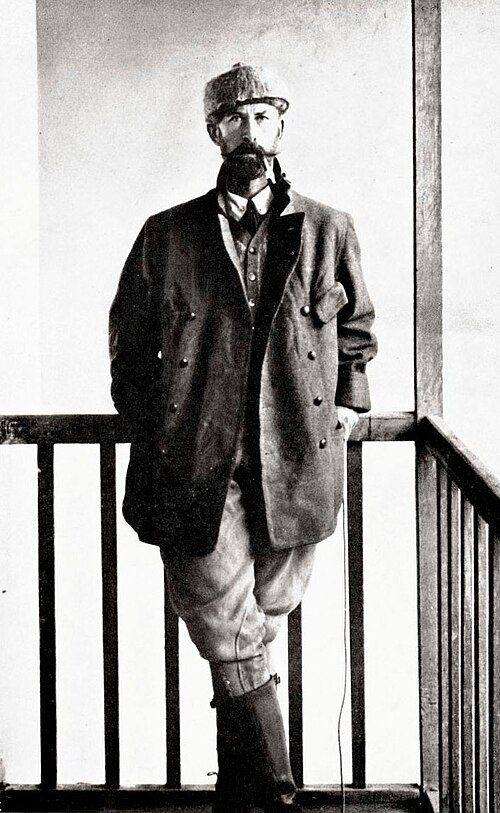
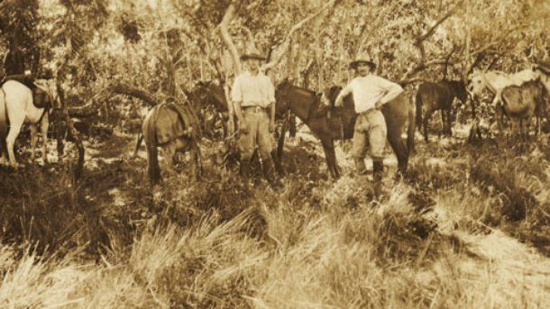
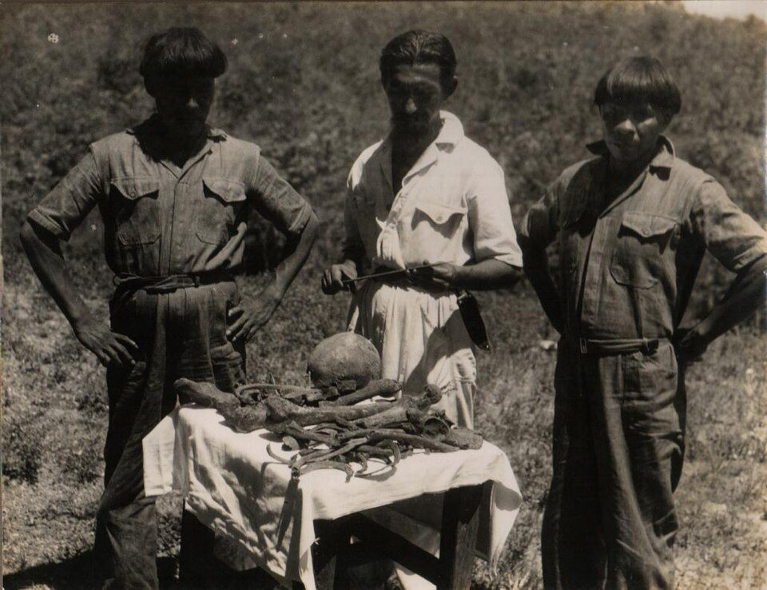

Percy Fawcett e a expedição que não voltou
Ele procurava uma cidade de pedra, com arcos, estátua e inscrições — uma ideia europeia de cidade. O que existia naquela região era outra coisa, muito maior e feita de terra. É possível que ele tenha atravessado por cima dela sem reconhecer.
- Onde
- Alto Xingu, Mato Grosso
- Saída de Cuiabá
- 20 de abril de 1925
- Última notícia
- 29 de maio de 1925
- Expedição
- três homens
- Fonte da lenda
- Manuscrito 512, de 1753
- Corpos
- nunca identificados
Em maio, o Alto Xingu ainda está saindo das chuvas. O capim das áreas abertas passa da cintura, o chão guarda água e o mosquito não dá trégua. É um mosaico — mata fechada em umas faixas, campo alagadiço em outras, rios largos e lentos de água escura. Não é a floresta compacta que a palavra "Amazônia" costuma evocar. É um lugar onde se anda, e onde é perfeitamente possível passar ao lado de alguma coisa grande sem enxergar.
Em 29 de maio de 1925, de um ponto que chamou de Campo do Cavalo Morto, Percy Fawcett escreveu a última carta que chegou ao mundo. Estava com o filho Jack, de 22 anos, e com Raleigh Rimell, amigo de Jack e um ano e meio mais velho. Dispensara carregadores. Seguiu para o leste.
Nunca mais se soube. Nos cem anos seguintes, o desaparecimento virou uma das histórias mais contadas da exploração — e, como quase toda história muito contada, foi ganhando números e certezas que não resistem a conferência.
01O homem
Percival Harrison Fawcett nasceu em Torquay, na Inglaterra, em 18 de agosto de 1867. Tornou-se tenente da Artilharia Real em 1886, entrou para a Royal Geographical Society em 1901 e, em 1906, foi encarregado pela própria RGS de mapear a fronteira entre a Bolívia e o Brasil — região então disputada, em plena febre da borracha.
Isso importa, porque define a credibilidade dele. Fawcett não era um aventureiro romântico: era topógrafo profissional, bom no serviço, com anos de campo em terreno que matava quem não sabia. Chegou a La Paz em junho de 1906, rastreou a nascente do rio Verde em 1908, esteve no rio Heath, na divisa entre a Bolívia e o Peru, em 1910. Aposentou-se do Exército em 19 de janeiro daquele ano para se dedicar à exploração — e voltaria à farda na Primeira Guerra, comandando artilharia em Flandres e chegando a tenente-coronel em 1918. É dessa passagem que vem o "Coronel Fawcett" pelo qual ficou conhecido.

A reputação dele era grande o bastante para contaminar a ficção: Arthur Conan Doyle, de quem se tornou amigo por meio do colega de colégio Bertram Fletcher Robinson, usou relatos seus como matéria-prima para O Mundo Perdido. A ideia de um platô sul-americano escondendo algo antigo entrou na cultura popular por essa porta.
02O Manuscrito 512
A obsessão tem uma origem documental, e ela está no Rio de Janeiro. Guardado na Biblioteca Nacional, o chamado Manuscrito 512 é um relato anônimo de 1753, atribuído por conjectura do historiador Pedro Calmon a uma bandeira comandada por João da Silva Guimarães. O texto descreve a descoberta, no sertão da Bahia — entre os rios Paraguaçu e Una —, das ruínas de uma cidade abandonada: ruas largas, arcos, uma estátua, e um templo com inscrições que o autor compara a hieróglifos.
O documento é real; a cidade que ele descreve é que nunca foi encontrada. As leituras modernas mais sóbrias apontam para formações rochosas naturais da Chapada Diamantina interpretadas como arquitetura, ou para exagero deliberado num relato feito para justificar despesa e obter patrocínio — um gênero literário comum entre bandeirantes.
03Z
Por volta de 1914, Fawcett já tinha formulado a hipótese que o consumiria. Em algum ponto de Mato Grosso haveria os restos de uma civilização antiga e sofisticada, que ele chamou simplesmente de Z — nome escolhido, entre outras razões, para não entregar a localização a concorrentes.
Nas versões mais contidas, Z era uma cultura indígena complexa e esquecida. Nas menos contidas — e Fawcett escreveu as duas —, era herdeira da Atlântida, com tecnologia e conhecimento perdidos. Essa oscilação entre o topógrafo rigoroso e o místico convicto é a característica mais interessante do personagem, e a que mais costuma ser apagada nas duas direções: nem ele era um charlatão, nem era só um cientista.
041925
A expedição final saiu de Cuiabá em 20 de abril de 1925. Eram três: o próprio Fawcett, com 57 anos; o filho Jack, com 21, que faria 22 em maio; e Raleigh Rimell, de 23. Iam acompanhados de dois camaradas brasileiros, dois cavalos, oito mulas e dois cães — apoio que seria dispensado semanas depois. A escolha de terminar a jornada em três, sem grande comitiva, era deliberada — Fawcett acreditava que um grupo pequeno assustava menos os povos da região e se movia mais rápido.

A última carta saiu do Campo do Cavalo Morto em 29 de maio, levada de volta pelos carregadores dispensados ali. Fawcett escreveu que seguiriam para leste e pediu que ninguém fosse procurá-los se não houvesse notícia — frase que, previsivelmente, não foi obedecida por ninguém.
Um detalhe do relato costuma escapar: Raleigh Rimell estava com o pé infeccionado havia semanas e caminhava com dificuldade. Três homens, sem apoio, um deles doente, entrando a pé numa região que eles não conheciam, no fim da estação chuvosa.
05O que veio depois
O desaparecimento gerou cerca de treze expedições de busca ao longo de décadas, algumas financiadas por jornais, outras por entusiastas — embora só uma delas tenha efetivamente alcançado o Xingu. É daí que vem o número mais repetido da história — o de que cem pessoas teriam morrido procurando Fawcett.
Esse número não se sustenta, e vale registrar como ele circulou. Ele chegou ao grande público pelo livro de David Grann, que o recolheu de um entrevistado como estimativa. O historiador John Hemming, um dos maiores especialistas em exploração amazônica, contesta com dureza: apenas uma expedição de busca chegou de fato ao Xingu, a de George Dyott em 1928, e sem mortes; o único morto foi Albert de Winton, que entrou sozinho em 1935. Para Hemming, o total é um.
Em 1951, Orlando Villas-Bôas recebeu dos kalapalos uma ossada apresentada como sendo de Fawcett, junto com o relato de que a expedição teria sido morta. Os ossos foram levados a exame. O Royal Anthropological Institute, em Londres, concluiu que não eram dele — estatura e arcada dentária não correspondiam aos registros de Fawcett. Brian Fawcett, filho do explorador, recusou-se a aceitá-los.

Há também o relato oral kalapalo, recolhido por pesquisadores décadas depois: os três teriam ficado na aldeia, partido para leste apesar do aviso de que havia grupos hostis naquela direção, e a fumaça da fogueira deles teria sido vista por cinco noites seguidas — até parar. A leitura local foi de que haviam sido mortos.
06O que estava realmente lá
A virada do caso não veio de uma busca. Veio da arqueologia, e demorou setenta e cinco anos.
A partir dos anos 1990, o antropólogo Michael Heckenberger trabalhou no Alto Xingu junto com os kuikuros — povo que, tudo indica, descende dos antigos moradores da região. O que ele documentou no complexo conhecido como Kuhikugu, nas cabeceiras do Xingu, não era aldeia: era uma rede.
Cerca de vinte povoados e vilas, ligados por estradas retas que cortavam a mata, com pontes sobre rios e canais para canoa. Valas defensivas e paliçadas. Praças de aproximadamente cento e cinquenta metros de diâmetro. Terra preta de índio — solo antropogênico — indicando ocupação longa e agricultura intensiva. A estimativa de população para o conjunto chega a dezenas de milhares de pessoas, com sítios individuais podendo passar de cinco mil. A ocupação vai de cerca de mil e quinhentos anos atrás até aproximadamente quatrocentos anos atrás, quando as epidemias trazidas pelos europeus esvaziaram a região.
Fawcett estava certo na premissa e errado em tudo o que a premissa significava. Havia, sim, sociedades grandes e organizadas no coração do continente, onde a antropologia da época garantia que só podia haver bandos pequenos. Mas elas não construíam em pedra: construíam em terra, madeira e palha, com engenharia hidráulica e urbanismo próprios. Um sítio desses, quatrocentos anos depois do abandono e coberto pela mata, não se parece nada com arco e hieróglifo. Parece um morro suave e uma clareira estranhamente reta.
Ele pode ter passado por Z. O problema é que Z não tinha o formato que ele levava na cabeça. A hipótese mais incômoda do caso
07As leituras, da mais sóbria à mais improvável
Morreram de doença, fome ou exaustão
A explicação mais econômica e a que menos precisa de suposições. Rimell estava com o pé infeccionado antes de saírem do Campo do Cavalo Morto. Iam a pé, sem carregadores, sem reabastecimento, no fim da estação chuvosa, numa região que nenhum dos três conhecia. Fawcett tinha 57 anos.
Numa situação dessas, a morte não precisa de vilão. Precisa apenas de uma infecção que avança, de uma perna que para, e de dois companheiros que não conseguem carregar o terceiro nem voltar sozinhos.
Foram mortos por um grupo indígena da região
Sustentada pelo relato oral kalapalo — a partida para leste apesar do aviso, a fumaça vista por cinco noites e depois interrompida — e pelo fato de que havia, sim, grupos hostis a estranhos naquela direção, depois de décadas de violência de seringueiros na bacia.
O que a enfraquece é a ossada de 1951, que foi apresentada como prova dessa versão e não resistiu ao exame. Isso não invalida o relato oral; invalida aquele conjunto de ossos. São coisas diferentes, e a cobertura do caso quase sempre as confunde.
Fawcett escolheu desaparecer
A hipótese de que ele teria encontrado o que procurava — ou desistido do mundo de onde vinha — e optado por ficar, fundando uma comunidade ou integrando-se a um povo local. Os escritos místicos dele dão alguma margem, e ele de fato falava de Z em termos quase religiosos.
Contra: levou o próprio filho de 22 anos e um rapaz doente da mesma idade. Planejar o desaparecimento definitivo arrastando duas pessoas nessas condições é um perfil psicológico difícil de conciliar com tudo o mais que se sabe dele.
Encontraram a cidade e o achado foi suprimido
A versão de encobrimento — uma descoberta extraordinária, um explorador silenciado. Ela pressupõe uma instituição com interesse em esconder aquilo e capacidade de fazê-lo por um século.
A realidade é o contrário exato. A civilização do Alto Xingu foi encontrada, escavada, publicada em revista científica e divulgada no mundo inteiro — e o levantamento por laser do sudoeste amazônico projeta hoje entre vinte e quatro e trinta mil estruturas pré-coloniais na região, a partir de 432 sítios detectados diretamente em voo, como detalha o dossiê 002. Ninguém escondeu nada. A descoberta levou décadas porque exigia um instrumento que não existia, e não porque houvesse alguém interessado em abafá-la.
08Cronologia
- 1753Uma bandeira registra, no documento hoje chamado Manuscrito 512, a descoberta de ruínas com arcos, estátua e inscrições no sertão. O papel está na Biblioteca Nacional; a cidade nunca apareceu.
- 18 de agosto de 1867Nasce Percival Harrison Fawcett, em Torquay, Inglaterra.
- 1906 – 1909A Royal Geographical Society o encarrega de mapear a fronteira Brasil–Bolívia; ele rastreia a nascente do rio Verde em 1908.
- 1910Sobe o rio Heath, na divisa Bolívia–Peru, e se aposenta do Exército em 19 de janeiro.
- c. 1914Fawcett formula a hipótese de Z, uma civilização antiga em algum ponto de Mato Grosso.
- 20 de abril de 1925A expedição final parte de Cuiabá: Fawcett, 57; o filho Jack, 21; Raleigh Rimell, 23; e dois camaradas brasileiros com animais de carga.
- 29 de maio de 1925Última carta, do Campo do Cavalo Morto. Dispensam os carregadores e seguem para leste.
- 1951 – 1952Orlando Villas-Bôas recebe dos kalapalos uma ossada atribuída a Fawcett. O exame no Royal Anthropological Institute conclui que não é dele.
- anos 1990 – 2000sMichael Heckenberger documenta, com os kuikuros, o complexo de Kuhikugu: cerca de vinte povoados ligados por estradas, pontes e canais, com valas e paliçadas.
- 2009David Grann publica A Cidade Perdida de Z, que reconstitui o caso e leva o achado arqueológico ao grande público.
- 2026Levantamento por laser no Acre e no Amazonas detecta 432 estruturas em voo e estima de 24 a 30 mil no sudoeste amazônico, confirmando a escala que Fawcett intuiu e não soube descrever.
09O que continua em aberto
Onde estão os três. Nenhum corpo foi identificado. Nenhum objeto pessoal inequívoco apareceu. Nenhuma expedição de busca produziu material que resistisse a exame. Cem anos depois, o dado bruto do caso continua sendo uma ausência.
Até onde chegaram. O Campo do Cavalo Morto é o último ponto confirmado, e nem a localização exata dele é consensual. Tudo o que vem depois — a direção leste, os dias de caminhada, a distância percorrida — é reconstrução a partir de uma carta e de memória oral.
E o que ele teria dito. Esta é a pergunta que o dossiê não consegue largar. Se Fawcett tivesse sobrevivido mais vinte anos e visto o que Heckenberger escavou, teria reconhecido Z num aterro coberto de mata, numa praça de cento e cinquenta metros, num solo preto de ocupação antiga? Ou teria continuado andando, procurando arco e hieróglifo, porque era isso que o Manuscrito 512 tinha prometido?
10Fontes consultadas
Este dossiê é texto autoral. As fontes abaixo foram consultadas para apuração de datas, números e atribuições; nenhuma foi reproduzida.
- Verbete enciclopédico consolidado sobre Percy Fawcett — biografia, carreira na Royal Geographical Society, expedição de 1925 e episódio da ossada.
- Grann, D. — The Lost City of Z, 2009: reconstituição do caso, relato oral kalapalo e a controvérsia sobre o número de mortos nas buscas.
- Hemming, J. — contestação da cifra de cem mortes em expedições de busca.
- Heckenberger, M. et al. — trabalhos sobre urbanismo pré-colombiano e paisagens antropogênicas no Alto Xingu, incluindo o complexo de Kuhikugu.
- Documentação pública sobre o Manuscrito 512, guardado na Biblioteca Nacional do Rio de Janeiro.
- Registros fotográficos de domínio público da expedição de 1925 e do episódio de 1951–1952.